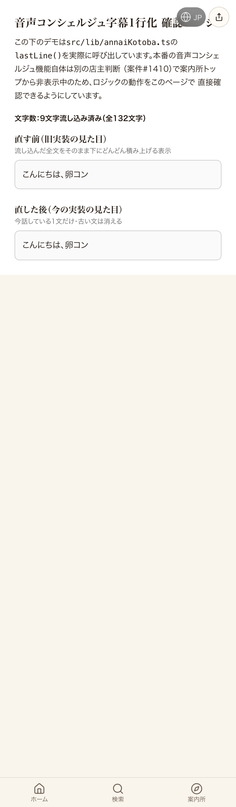
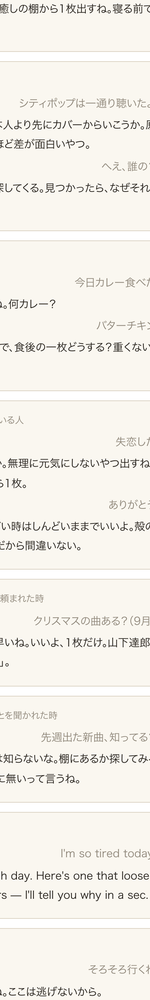

共有資料の一覧 ／ 確認ページ #98403 話す卵の案内人：人格と会話設計をコードの正本に入れた
#98403 話す卵の案内人：人格と会話設計をコードの正本に入れた
2026-10-16 実装・main合流まで実測確認／02:10の機械検品（非公開リポのリンク）を受けて、証拠を本人が開ける公開ページへ差し替え
【直したこと1行】話す卵の案内人の「人格と会話設計」を1つの正本ファイルにまとめ、声・文字の案内・0円の控えの3か所が同じ人格を読むようにした（本番反映はLovable公開が押せず未反映）。
案内人が何者か（馴染みの店員）・口調（短いタメ口、マニュアル敬語なし）・距離感・毒っ気・何を聞くか（今日どんな感じ？の1問）・何を返すか（一言→1枚→なぜそれか1行）・棚へのつなぎ方（好き→安心→半歩先）・会話の流れ（最初の一言／迷った人／詳しい人／脱線／別れ）・やってはいけない返事（禁句17語＋ふるまい8つ）・例の会話9場面を、1つの正本ファイルにまとめた。声（xAI）へはその人格文を会話の頭に渡し、案内所の最初の一言と0円の控えの文面も同じ人格に揃えた。有料API（音声・LLM）は1回も叩いていない。実測: 検査した文面 66 本・禁句 0・例の会話 9 場面・人格文 1424 字（npx tsx scripts/patrol/check-annainin-jinkaku.mts の出力。わざと禁句を混ぜる逆テストで赤になることも確認）。本番反映: main合流済み（563b54054）。Lovableの「公開」は、押す係の専用Chrome（CDP 9223）が10-11から落ちていて、MCPの鍵も同意切れ（invalid_grant）のため未反映。
② 数字
66案内人が言う文面（禁句 0）
9例の会話の場面
1424声へ渡す人格文の字数
0叩いた有料API（音声・LLM）
③ 実データでのスクリーンショット
前：本番の確認ページ（字幕デモだけ）
後：人格の正本・会話の流れ・例の会話・人格文（開発サーバーで実測）
④ 押せるリンク
⑤ 何をどう確かめたか
| 確認項目 | 結果 |
|---|
| 案内人が言う全66文面に禁句が無い（機械検査） | 0件 |
| 逆テスト（わざと禁句を混ぜる）で赤になる | NG 1件で停止 |
| 開発サーバーのサーバー描画に人格の正本・例の会話・人格文が出る | 出る（下のスクショ） |
| 有料API（xAI・OpenAI）を叩いた回数 | 0回 |
| mainへ合流 | 563b54054 |
| Lovableの公開（本番反映） | 未反映（公開便のChromeが落ちている・MCPの鍵は同意切れ） |